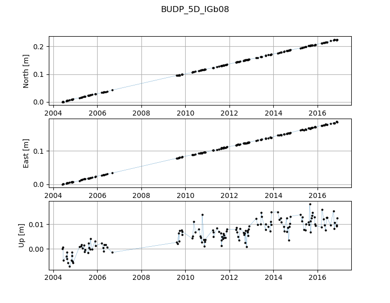

fire ts
Kommandogruppen fire ts indeholder værktøjer til indlæsning af data fra forskellige kilder.
Usage: fire ts [OPTIONS] COMMAND [ARGS]...
Håndtering af koordinattidsserier.
Options:
--help Show this message and exit.
Commands:
gnss Udtræk en GNSS tidsserie.
plot-gnss Plot en GNSS tidsserie
fire ts gnss
Udtræk en GNSS tidsserie.
"OBJEKT" sættes til enten et punkt eller et specifik navngiven tidsserie.
Hvis "OBJEKT" er et punkt udskrives en oversigt over de tilgængelige
tidsserier til dette punkt. Hvis 'OBJEKT' er en tidsserie udskrives
tidsserien på skærmen. Hvilke parametre der udskrives kan specificeres
i en kommasepararet liste med --parameter. Følgende parametre kan vælges:
| t Tidspunkt for koordinatobservation
| x Koordinatens x-komponent (geocentrisk)
| sx x-komponentens spredning (i mm)
| y Koordinatens y-komponent (geocentrisk)
| sy y-komponentens spredning (i mm)
| z Koordinatens z-komponent (geocentrisk)
| sz z-komponentens spredning (i mm)
| X Koordinatens x-komponent (geocentrisk, normaliseret)
| Y Koordinatens y-komponent (geocentrisk, normaliseret)
| Z Koordinatens z-komponent (geocentrisk, normaliseret)
| n Normaliseret nordlig komponent (topocentrisk)
| e Normaliseret østlig komponent (topocentrisk)
| u Normaliseret vertikal komponent (topocentrisk)
| decimalår Tidspunkt for koordinatobservation i decimalår
| obslængde Observationslængde givet i timer
| kkxx Koordinatkovariansmatricens XX-komponent
| kkxy Koordinatkovariansmatricens XY-komponent
| kkxz Koordinatkovariansmatricens XZ-komponent
| kkyy Koordinatkovariansmatricens YY-komponent
| kkyz Koordinatkovariansmatricens YZ-komponent
| kkzz Koordinatkovariansmatricens ZZ-komponent
| rkxx Residualkovariansmatricens XX-komponent
| rkxy Residualkovariansmatricens XY-komponent
| rkxz Residualkovariansmatricens XZ-komponent
| rkyy Residualkovariansmatricens YY-komponent
| rkyz Residualkovariansmatricens YZ-komponent
| rkzz Residualkovariansmatricens ZZ-komponent
Tidsserien kan skrives til en fil ved brug af --fil, der resulterer i
en csv-fil på den angivne placering. Denne fil kan efterfølgende åbnes
i Excel, eller et andet passende program, til videre analyse.
Vis alle tidsserier for punktet RDIO:
fire ts gnss RDIO
Vis tidsserien 'RDIO_5D_IGb08' med standardparametre:
fire ts gnss RDIO_5D_IGb08
Vis tidsserie med brugerdefinerede parametre:
fire ts gnss RDIO_5D_IGb08 --paramatre decimalår,n,e,u,sx,sy,sz
Gem tidsserie med samtlige tilgængelige parametre:
fire ts gnss RDIO_5D_IGb08 -p alle -f RDIO_5D_IGb08.xlsx
fire ts gnss [OPTIONS] [OBJEKT]
Options
- -p, --parametre <parametre>
Vælg hvilke parametre i tidsserien der skal udtrækkes. Som standard sat til 't,x,sx,y,sy,z,sz'. Bruges værdien 'alle' udtrækkes alle mulige parametre i tidsserien. Se
fire ts gnss --helpfor yderligere detaljer.
- -f, --fil <fil>
Skriv den udtrukne tidsserie til Excel fil.
- --db <db>
Vælg en specifik databaseforbindelse - default_connection i fire.ini bruges hvis intet vælges.
- Options
prod | test
- -m, --monokrom
Vis ikke farver i terminalen
- --debug
Vis debug output fra FIRE-databasen.
- --help
Vis denne hjælp tekst
Arguments
- OBJEKT
Optional argument
fire ts plot-gnss
Plot en GNSS tidsserie
Et simpelt plot der viser udviklingen i nord, øst og op retningerne over tid.
"TIDSSERIE" er et GNSS-tidsserie ID fra FIRE. Eksisterende GNSS-tidsserier kan
fremsøges med kommandoen fire ts gnss <punktnummer>.
EKSEMPLER
Plot af 5D-tidsserie for BUDP:
fire ts plot-gnss BUDP_5D_IGB05
Resulterer i visning af nedenstående plot.
{kind=link}
fire ts plot-gnss [OPTIONS] TIDSSERIE
Options
- --db <db>
Vælg en specifik databaseforbindelse - default_connection i fire.ini bruges hvis intet vælges.
- Options
prod | test
- -m, --monokrom
Vis ikke farver i terminalen
- --debug
Vis debug output fra FIRE-databasen.
- --help
Vis denne hjælp tekst
Arguments
- TIDSSERIE
Required argument